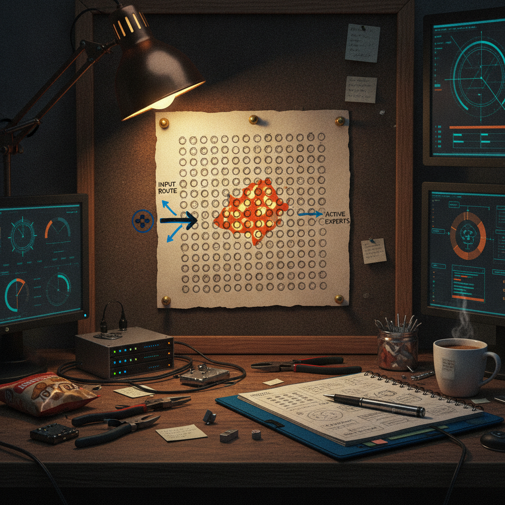

How a 744-Billion-Parameter Model Runs on 25GB of RAM With No GPU
Every time I see a parameter count in the hundreds of billions, my first thought is "okay, what rig do I need to even open that file." So when I saw a post claiming a 744B model was running on a regular machine with no GPU, I stopped scrolling.
What was bookmarked
@RoundtableSpace posted a breakdown of GLM-5.2, a 744-billion-parameter model, being run through something called Colibri on a consumer machine using 25GB of RAM and no GPU. The thread starts explaining the mechanics: the model has 744B total parameters, but only around 40B activate per token because it uses a mixture-of-experts (MoE) design. That means the full model is never loaded and computed at once, only the relevant "experts" for each token. The post continues into a point about the dense part of the model (attention layers) before the text available to me cuts off at a linked image or follow-up tweet, so I do not have the rest of that explanation.

Why it matters
This touches something a lot of people quietly want: real local AI that does not require a server rack or a five-figure GPU budget. The gap between "frontier model" and "thing you can run on your own machine" has felt like it was widening for a while, with the biggest models assumed to be permanently locked to data centers. Posts like this are a reminder that architecture choices, not just raw hardware, decide what is actually possible on a laptop or home server. MoE is the mechanism doing the heavy lifting here, and it is worth understanding even if you never run this specific model.
The practical breakdown
What it does: GLM-5.2 is structured so that only a fraction of its total parameters (about 40B out of 744B) are active for any given token. The rest of the "experts" sit unused until the routing mechanism decides they are relevant. That is the whole trick behind fitting a model this large into modest memory: you are not paying the compute or memory cost of the full 744B at once.
Who it helps: Anyone trying to run large models locally without enterprise-grade hardware, people experimenting with local inference tools, and builders who want to test frontier-scale models without cloud API costs or rate limits.
Why builders should care: If MoE routing plus a tool like Colibri really gets a 744B model onto 25GB of RAM with no GPU, that changes the calculus for hobbyists and small teams. It suggests the ceiling for "what can run on normal hardware" is higher than most of us assume, and it is worth tracking how these efficiency techniques keep evolving.
What still needs work: The post I have access to cuts off before finishing the explanation of the dense attention layers, which is usually the part that determines real-world speed and memory use, not just the MoE routing. I do not have benchmarks, token-per-second numbers, or details on quantization from this post, so I would treat the specific performance claims as promising but not yet fully verified from what is shown here.
What I would test first: If you have access to Colibri, I would want to see actual tokens-per-second on a real prompt, not just that it loads, plus how it behaves on longer context windows where memory pressure tends to show up first.
Rick's take
I like posts like this because they take something that sounds like magic ("744B parameters, no GPU") and actually explain the mechanism instead of just hyping the number. MoE is not new, but seeing someone walk through why it matters for local hardware, in plain terms, is exactly the kind of practical explainer I bookmark things for. @RoundtableSpace clearly put thought into breaking this down step by step rather than just dropping a headline stat. The one thing I would want before getting too excited is the rest of that explanation on the dense attention portion, since that is usually where the real memory and speed tradeoffs live. But as a starting point for understanding how huge models are becoming runnable on normal machines, this is a solid thread to have bookmarked.
What to watch next
I would keep an eye on how Colibri and similar local-inference tools handle context length and sustained generation, since loading a model is one thing and running it comfortably for real work is another. It is also worth watching whether more MoE models get built specifically with consumer hardware in mind, since that seems to be where a lot of the practical local-AI progress is actually happening right now.
Source and links
Source: X post by @RoundtableSpace, https://x.com/i/web/status/2076316902402748570, retrieved on 2026-07-12.
External references: none available (the linked media in the original post was not accessible from the retrieved text).